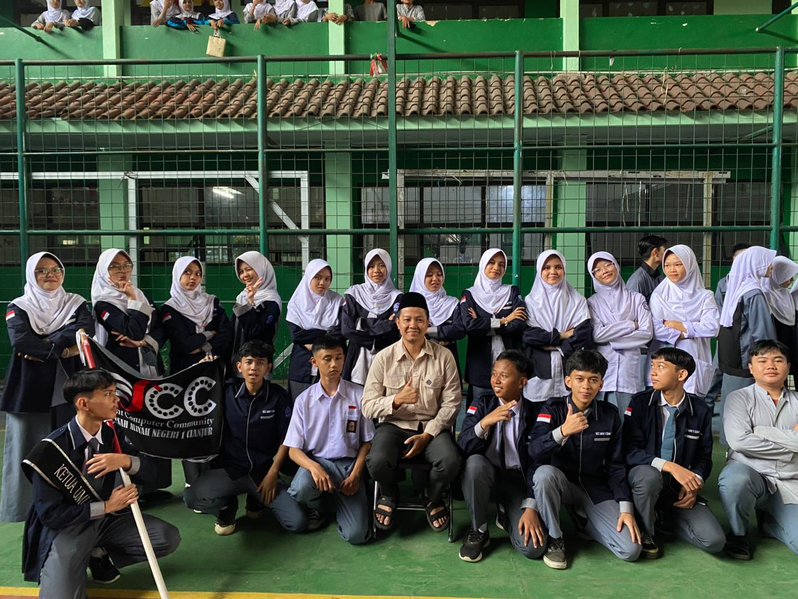
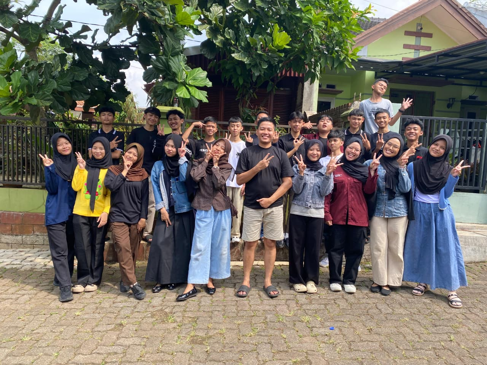
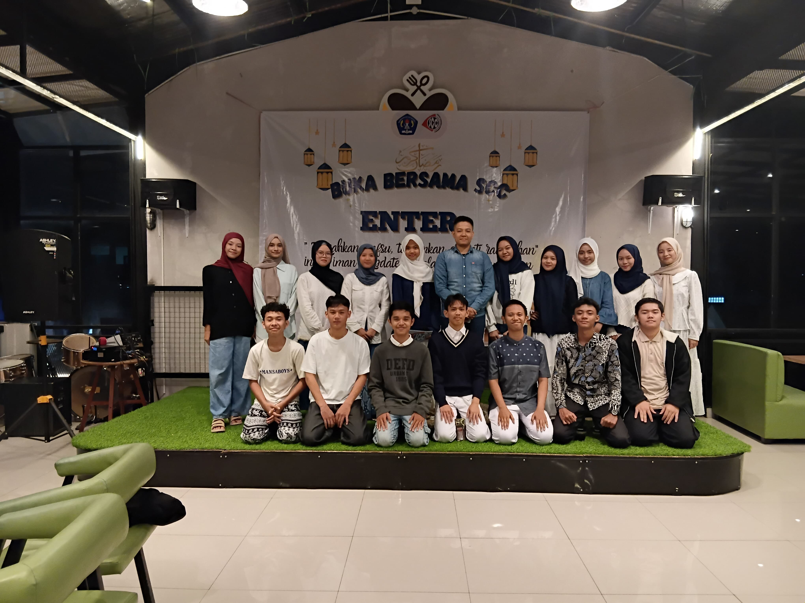

Pembina
Nama: Ferry Ardiatna, ST
Tahun: 2013-seterusnya
Keahlian: Manajemen organisasi
Mengembangkan Keterampilan Digital, Kreativitas, dan Inovasi Siswa di Era Teknologi.

Nama: Ferry Ardiatna, ST
Tahun: 2013-seterusnya
Keahlian: Manajemen organisasi

Nama: Moch Epan Epriansah
Kelas: XII-A
Tahun: 2025 - 2026
Juara 1 Kyorugi Junior U.51KG Putra di Kejuaraan Taekwondo ITN Open IX Antar Unit se-Jawa Barat.
Keahlian: Editor sesuai mood
Student Computer Community (SCC) merupakan ekstrakurikuler yang berfokus pada pengembangan keterampilan digital dan teknologi bagi siswa. Kegiatan dalam SCC tidak hanya terbatas pada coding, tetapi juga mencakup berbagai bidang seperti pengolahan data perkantoran (Office), desain grafis, pengembangan web, hingga esport. Melalui pembelajaran yang bersifat praktis dan kolaboratif, SCC bertujuan untuk membentuk siswa yang kreatif, inovatif, serta mampu mengikuti perkembangan teknologi di era digital. Selain itu, SCC juga menjadi wadah bagi siswa untuk menyalurkan minat dan bakat, bekerja dalam tim, serta menghasilkan karya-karya digital yang bermanfaat. Dengan bimbingan pembina dan pengajar yang berpengalaman, diharapkan setiap anggota dapat mengembangkan kemampuan secara optimal dan siap menghadapi tantangan di dunia teknologi di masa depan.


